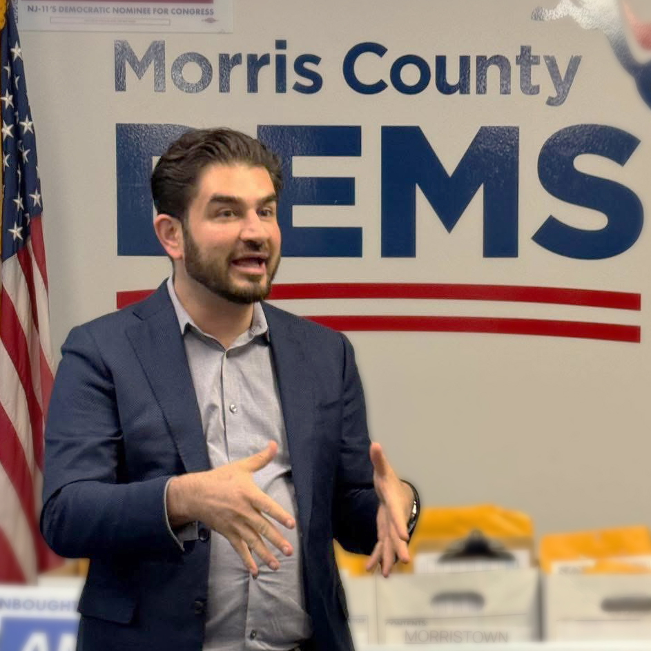
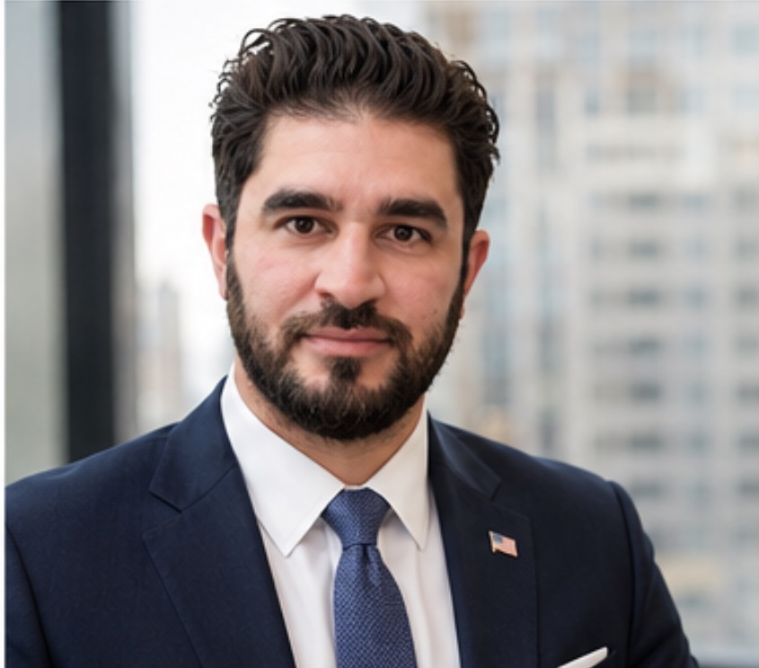

Caregiver
A registered nurse who has spent his career looking after people when it matters most.
Township Committee · 2026
Ahmad Saleh, RN, is running for Hanover Township Committee to bring careful, accountable, hands-on leadership to the place his family calls home.

A registered nurse who has spent his career looking after people when it matters most.
Co-founder of a company he grew from nothing, who knows what it takes to make something last.
A neighbor who listens first, brings people to the table, and reports back honestly.

About the candidate
Ahmad is a registered nurse and a medical device executive at a global health technology company. He is also the co-founder of a special needs student transportation company he built alongside his mother, growing it from the ground up.
He lives on Bee Meadow Parkway with his multigenerational family, the home he chose so several generations could live under one roof. That is the lens he brings to local government: this is not an abstraction to him, it is his street, his water, his taxes, his neighbors.
“I will research [the issues] for hours, talk to the right people, ask questions, and then report back.”
That is the standard he wants to hold the Township Committee to. Do the homework, talk to the people affected, and come back with straight answers.
Ahmad's story
Every chapter of Ahmad's life brought him to this moment. Explore his story and get to know the neighbor behind the candidate.
Ahmad Saleh grew up in Lake Hiawatha, just minutes from where he lives today, in a home filled with the kind of love that does not need to announce itself. He is the son of Afghan immigrants, the middle of four siblings, and the person his family calls when they need anything. In 2022, he brought everyone home, buying a house on Bee Meadow Parkway for his parents, his sister, and eventually his 101-year-old grandmother, who moved in after an injury and whom the family cares for together. Multigenerational living was not a plan. It was just what you do when family comes first.
Ahmad's father, a former engineering student from Kabul, woke at midnight for 34 years to push a coffee cart to a corner at 43rd and Broadway in Times Square. His mother earned her commercial driver's license and spent years transporting special needs children to school. They came to America with almost nothing, shielded their children from every hardship, and built a life that was, by any measure, extraordinary. Ahmad never felt the struggle. He felt rich. That is the greatest gift they gave him, and the standard he has carried ever since.
Ahmad found his calling in nursing almost by accident, stopping at a sign at County College of Morris one afternoon and feeling something click. He went on to graduate from Hackensack University's School of Nursing at Mountainside Hospital, where he discovered that caring for people, especially at their most vulnerable, was not just a skill but a vocation. He worked with patients at the end of life, sat with Holocaust survivors, and found in every room the same truth: showing up fully for another person is the most important thing you can do. He calls it sacred work. He still means it.
Ahmad spent the past decade transforming healthcare organizations at scale, from rebuilding failing sales divisions to implementing new standards of care inside major health systems. He helped take a publicly traded healthcare company all the way to the NASDAQ closing bell. He manages budgets, negotiates contracts, works with hospital executives and boards, and applies the kind of rigorous, data-driven thinking that turns struggling organizations into high-performing ones. He brings every one of those skills to Hanover Township.
Ahmad and his mother built Safe and Secure Transportation together, starting from a conversation about why she was working for someone else's company when they could build their own. Today it is a seven-figure business serving school districts across the region, transporting special needs students with the same care his mother brought to the job long before it was hers to run. He knows what it takes to start something from nothing, make payroll, solve problems without a playbook, and be accountable to the families depending on you.
When Ahmad moved to Bee Meadow Parkway, he did what any neighbor does: he started paying attention. He joined the local Democratic committee, began having coffee with residents across the township, and found something consistent in those conversations: people who love Hanover and want their voices to matter more. He is running for Township Committee to bring a caring, curious, and prepared perspective to the issues affecting every household here. Not to take sides. To listen, do the homework, and show up for the town that has always felt like home.
The Issues
Government should think beyond the next budget cycle. If elected, Ahmad will champion Hanover 2036, a long-term strategic planning initiative that brings residents, business owners, first responders, schools, and community organizations together to develop a shared vision for the Township over the next decade. He will advocate for transparency and accountability at every step, and push to make sure that decisions made today preserve Hanover's character and prepare our community for the future.
Hanover works best when everyone has a seat at the table. Ahmad is committed to listening across party lines and putting neighbors first.
Read moreHanover's greatest strength is its families. Ahmad will fight for the safe neighborhoods, strong schools, and community values that make this township a place people are proud to call home.
Read moreSmart growth means lower taxes. Ahmad will work to attract the right businesses to Hanover, building a stronger commercial tax base that benefits every homeowner.
Read moreHanover deserves a true gathering place. Ahmad will lead the conversation about a community-driven Town Center that reflects who we are and where we are headed.
Read moreHanover's police officers keep our community safe. Ahmad will be their advocate on the Township Committee, fighting for the staffing, tools, and support they need.
Read moreEvery Hanover resident deserves safe drinking water without an unexpected bill. Ahmad will fight to secure outside funding first, so the cost does not fall on homeowners.
Read moreOther New Jersey municipalities are winning millions in grants every year. Ahmad will push for a dedicated strategy to make sure Hanover gets its share.
Read moreHanover is carrying approximately $8 million in unfunded capital projects, and the cost grows every year they go unaddressed. Ahmad will push for a responsible long-term plan that protects taxpayers.
Read moreHanover's neighborhood roads need attention, and the longer they wait, the more expensive they become. Ahmad will push for a long-term maintenance plan that puts side streets on the map.
Read moreHanover's dangerous intersections are not an accident waiting to happen. They are already happening. Ahmad will bring together the right people to find practical solutions that make every street safer.
Read moreHanover's firefighters are among our greatest assets. Ahmad will partner with the Fire Commissioners to advance a more efficient, sustainable fire service that serves residents for generations to come.
Read moreLocal government should bring people together, not divide them. Whether residents are Republican, Democrat, Independent, or unaffiliated, everyone wants safe neighborhoods, well-maintained roads, responsible spending, and a town they can be proud of. If elected, Ahmad will listen first, work with anyone who has good ideas, and always put Hanover ahead of partisan politics. At the end of the day, neighbors come before party labels, and that is the principle he will bring to every meeting and every vote.
The strength of Hanover has always been its families. Ahmad believes in supporting safe neighborhoods, access to healthcare and well-funded public health programs, excellent schools, academic achievement, personal responsibility, civic pride, patriotism, and respect for every person. If elected, he will advocate for policies that embrace new opportunities while preserving the values that have made Hanover such an exceptional place to live and raise a family.
The most sustainable way to keep residential property taxes low is by growing Hanover's commercial tax base. If elected, Ahmad will actively champion efforts to engage businesses and employers that are a good fit for the community, encouraging them to relocate or expand in Hanover. Every quality business attracted to the township strengthens the local economy, creates jobs, and helps reduce the tax burden on homeowners.
Hanover deserves a place that brings the community together. As part of Hanover 2036, Ahmad will facilitate a community-driven conversation about developing a public-private partnership to create a vibrant Town Center that supports local businesses, provides gathering spaces for families, and gives residents a destination they can truly call the heart of Hanover. He will advocate that any future development respect the character of the Township while enhancing the quality of life for everyone who calls it home.
Public safety is government's first responsibility. Hanover currently has approximately 31 police officers serving the Township, and Ahmad believes the community should continually evaluate whether that staffing level is sufficient to meet the needs of a growing population. If elected, he will advocate for the personnel, equipment, training, and technology officers need to continue keeping Hanover one of the safest communities in New Jersey. They will find a steadfast partner and a strong voice on the Township Committee.
Every resident deserves safe drinking water without facing an unreasonable financial burden. The controversy surrounding Hanover's water infrastructure, known locally as Pipegate, raised serious questions about transparency, accountability, and whether residents were given a full picture of the decisions being made on their behalf. Ahmad believes those questions deserve straight answers, and that the best way to restore trust is through action. If elected, he will work aggressively with neighboring municipalities, Morris County, the State of New Jersey, and the federal government to pursue every available funding opportunity for lead service line replacement. Before asking Hanover taxpayers to pay more, he will push to exhaust every outside funding source available.
Every year, municipalities across New Jersey secure millions of dollars in grants for roads, infrastructure, parks, recreation, public safety, flood mitigation, and environmental projects. Hanover has largely left that money on the table. If elected, Ahmad will advocate for a dedicated municipal grant strategy: a systematic approach to identifying, pursuing, and winning the funding that other townships are already capturing. Every grant dollar Hanover secures is a dollar its taxpayers do not have to provide.
Hanover currently has approximately $8 million in unfunded capital improvement projects that will eventually need to be addressed. While the budget appears balanced due to a provision the state allows, the Township is carrying a growing debt obligation that does not disappear by being deferred. Delaying these projects only increases their future cost, and without a long-term funding strategy, taxpayers could continue seeing approximately $1 to $2 million in additional debt issued each year just to keep pace. If elected, Ahmad will advocate for responsible financial planning that prioritizes projects, pursues outside funding, and protects taxpayers from unnecessary debt.
Residents should not have to weave around potholes or drive over rough, deteriorating roads every day. If elected, Ahmad will advocate for prioritizing the repair of neighborhood streets, improving pavement conditions, and developing a long-term maintenance schedule that addresses roads before they become significantly more expensive to fix. Side streets in particular deserve attention, not just main roads. Well-maintained roads improve safety, protect vehicles, and preserve property values throughout the Township.
Too many intersections throughout Hanover have become frequent locations for accidents and near misses. If elected, Ahmad will work with traffic engineers, county officials, law enforcement, and residents to identify practical safety improvements, including better traffic signal timing, improved signage, safer pedestrian crossings, and traffic-calming measures where appropriate. Smart infrastructure saves lives.
When residents dial 911, they expect a fast and responsive fire department. Hanover's volunteer and paid firefighters are among the Township's greatest assets, and they deserve full support. While statute requires separation between the Township Committee and the independent fire districts, if elected Ahmad will partner with the Fire Commissioners to advocate for a consolidated and hybrid approach that improves operational efficiency, strengthens recruitment and retention, and explores opportunities for greater coordination where it benefits both public safety and taxpayers. He will also raise the urgency of addressing the condemned third floor of the Cedar Knolls firehouse, a safety issue that has gone unresolved for too long. The goal is straightforward: support the Commissioners, advance a sustainable hybrid model, and ensure Hanover has an outstanding fire service for generations to come.
Events
Event listings and 100 Cups of Coffee dates will appear here. Placeholder for now.